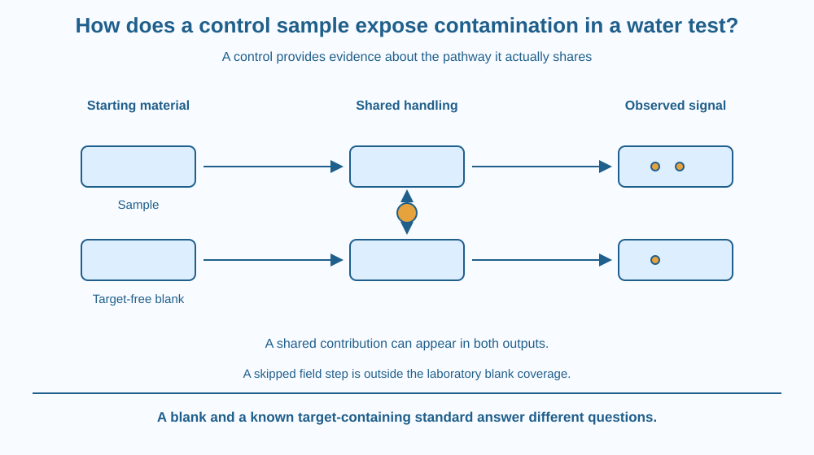

Explain how a blank control can reveal a signal introduced by a testing procedure. Distinguish the sample's original contents from contamination or background added during handling. Interpret a positive blank without claiming that one control automatically proves every result wrong or every clean-looking sample safe.
A water test produces a small signal. The class attributes it to the collected sample, but a comparison made with target-free water and the same handling steps also produces a signal.
Where could that shared response have come from? A container, reagent, tool or the procedure itself may have contributed. Without the blank, the added background could be mistaken for something originally present in the sampled water.
The control asks a focused question: what response appears when the intended target is absent from the starting control material?
A blank begins with material intended to lack the target being measured and passes through a specified part of the method. Its response helps reveal contributions not due to the target in the real starting sample.
A reagent blank includes relevant test reagents without the ordinary sample. It can reveal reagent or instrument background. A procedural blank can include additional handling and equipment steps. Names and exact definitions depend on the method, so the record must state what was actually done.
A field-handled blank can explore contamination introduced during collection or transport. It does not necessarily test every later laboratory source unless those steps are included too. A control's coverage is defined by its pathway.
A detectable blank signal can indicate contamination, background response or another method issue. It should prompt investigation of the relevant sources. The signal does not automatically identify which container or reagent caused it.
A low or absent blank response is reassuring about the tested pathway under those conditions, but it does not prove every sample result is accurate. Calibration errors, sample-specific interference or contamination outside the blank's route may remain.
Blindly subtracting any blank reading from every sample is not always justified. Appropriate correction depends on the method, variability and how the background behaves. A school model should show the logic without inventing a universal analytical rule.
The blank also differs from a known standard containing a known amount of target. A standard asks whether the method responds appropriately to a specified target amount. A blank asks what happens without that target at the start. Both can be useful, but their jobs are different.
This lesson does not provide a drinking-water safety test. A simplified colour signal, visual observation or blank result cannot establish the absence of every biological and chemical hazard. We use paper records to investigate method quality rather than testing unknown water for consumption.
Draw two parallel routes. One begins with the real sample; the other begins with target-free control material. Send both through the same illustrated containers, tools and reading step where the design requires a shared procedure.
Add a small unwanted contribution at a shared step. Both outputs can then show a response, revealing why the sample's result cannot all be credited automatically to its original contents.
Now move the unwanted contribution to a sample-only step that the blank skipped. The blank can remain low while the sample is affected. This exposes the control's coverage limit and motivates recording the exact pathway rather than simply writing control present.
The SVG shows sample and blank paths through matched handling stages. A shared container contribution appears in both outputs. A separate symbol marks a possible sample-only source that the blank would not detect.
Labels distinguish no target initially from no possible signal anywhere. The drawing also compares a blank with a target-containing standard without assigning concentrations or detection limits.
The example is conceptual and does not represent a real test kit. Its purpose is interpreting procedural evidence, not demonstrating that clear water or a negative classroom result is safe to drink.

Laboratory quality checks use controls because a measured signal can have more than one source. Clean-looking apparatus and careful intentions do not guarantee zero background contribution.
A school investigation using food colour and clean water can discuss the same logic, but it should not claim to reproduce a validated environmental analysis. The interpretation depends on what the signal means and which steps are shared.
For actual water-quality decisions in India, appropriate sampling and testing methods matter. This lesson supports understanding their controls; it does not replace professional testing or give a universal safe-water threshold.
Use paper and two colours. No unknown water, reagents or laboratory chemicals are needed.
Ask which source the blank can reveal and which it can miss. Label every symbol hypothetical. The model tests control coverage and causal reasoning, not real analytical performance or the safety of a water sample.
A blank has a signal, but only one of several reagents is actually contaminated. Why does the blank alone not identify the exact reagent? Suggest a sequence of narrower checks in a paper model.
Now imagine the blank did not travel to the collection site. Could it evaluate contamination from the field bottle? Explain why a control must pass through a relevant step to provide evidence about that step.
What is the starting purpose of a blank control?
Answer: A — The blank helps assess response not attributable to the target in its starting material.
Why can a shared contaminated container affect both outputs?
Answer: C — A shared handling source can add a signal to the sample and blank alike.
A laboratory blank skips field collection. What can it fail to check?
Answer: B — A control provides no direct evidence about a pathway it did not experience.
Design a method diagram that labels each control's starting material and route. Include a sample, a procedural blank and a known standard with distinct jobs.
Write a response plan for an unexpected blank signal without automatically declaring every sample contaminated or subtracting an arbitrary number. Keep the exercise on paper and state that a method-quality control is not a complete drinking-water safety certificate.
A useful control is a carefully designed comparison, not merely an extra container on the bench. Its power depends on which pathways it shares with the sample and which it deliberately omits. Naming those pathways makes the control's strengths and blind spots visible before a result is interpreted.
A blank tests for response introduced along its specified pathway; it helps separate sample content from procedural background but cannot check steps it never shared.